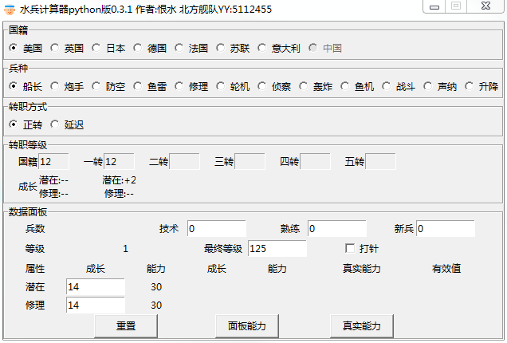
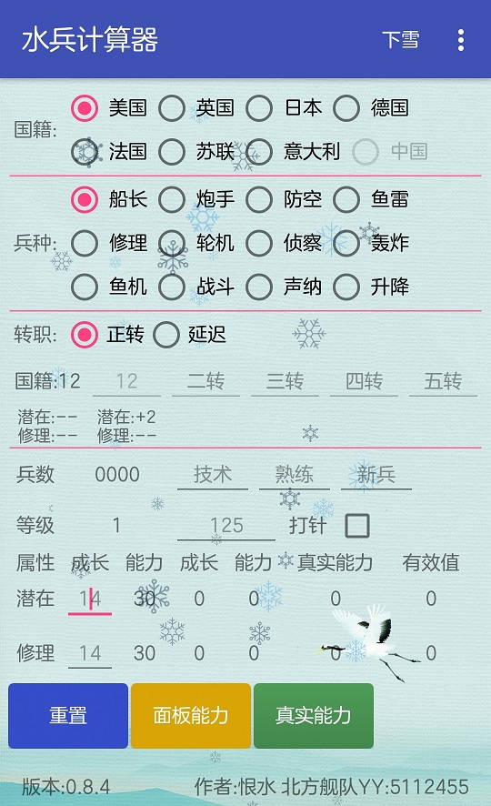

1，只计算水兵主属性能力和修理能力 2，炮手均默认各国装填路线 3，有效值表示兵种能力，轮机（加速时间），修理（秒修），升降（充氧时间）
百度网盘地址: v0.3.1 提取码：n3yn 
百度网盘地址: v0.8.4 提取码：kkce 
1，修复了水兵延迟转职导致的数量计算问题 2，开放了新兵数量填写
作者:恨水 邮箱:laocuo@163.com 北方舰队YY:5112455 如果发现数据仍有问题，请提供截图，谢谢。